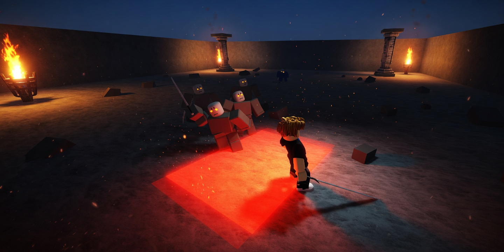
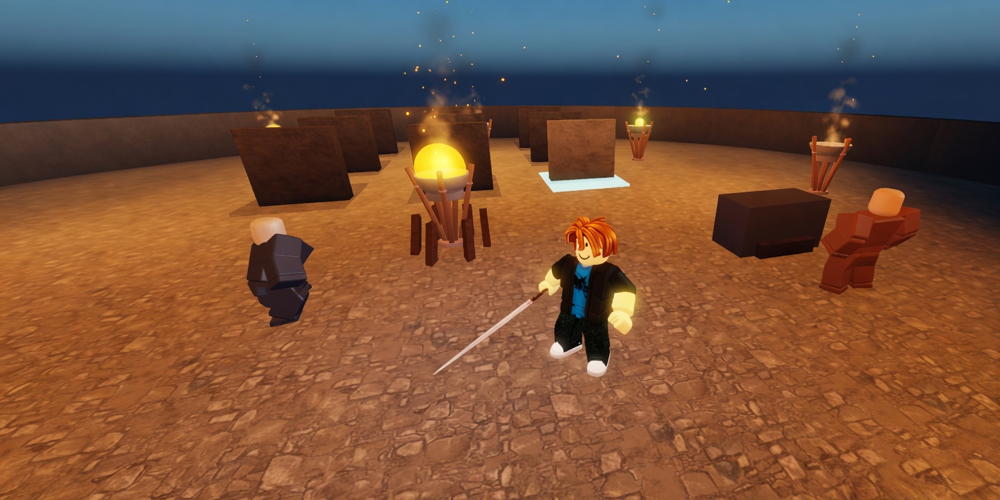
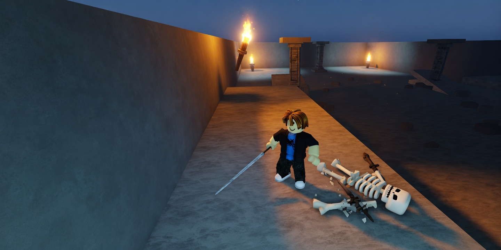
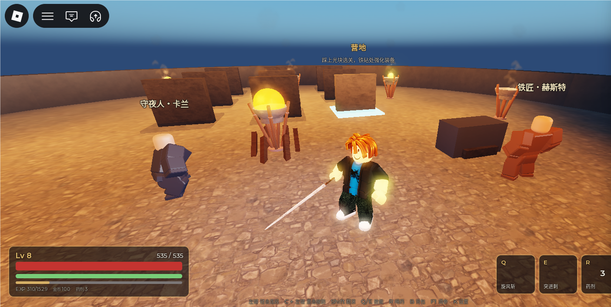
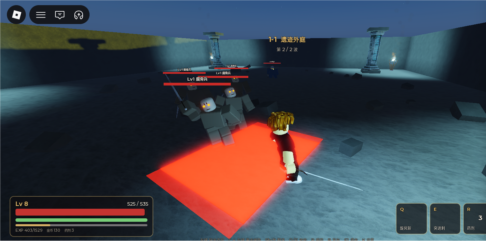
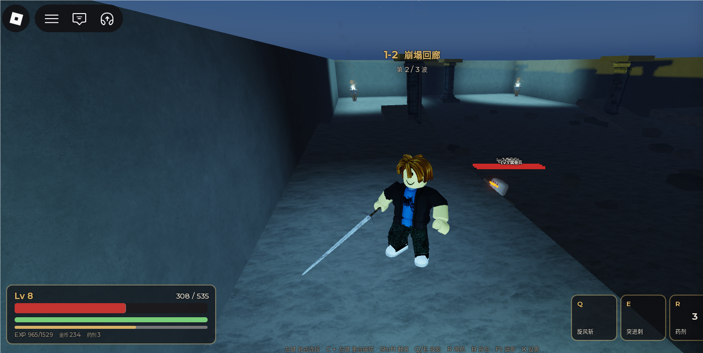

02 / 04
残刃
The Broken Blade
近战动作 RPG。三章九关，三个首领。敌人血量由击杀时长反解，攻击力由「还能挨几下」反解。一次完整通关约四十分钟。
在 Roblox 游玩
可玩
玩家心里算的是「还能挨几下」，不是每秒掉多少。攻击力按单击占血比设计，整条数值链都从这条感知出发。
四种敌人职能互补：腐骨兵贴脸消耗，骨弓手远程压制，重甲卫正面减伤五成逼玩家绕背或用重击破防，首领三阶段检验该章引入的要素。所有伤害都有前摇与地面预警，解法永远是看见框再翻滚。
连段输出按可取消点计算。初版按动画全长计算，低估玩家输出约 36%；修正后，一关腐骨兵的预测击杀时长 2.25 秒，实测 2.30 秒。
- 类型
- 第三人称动作 RPG
- 体量
- 3 章 9 关 + 3 Boss
- 通关
- 约 40 分钟
- 状态
- 可玩
核心循环
- 营地选关、强化装备、升级
- 关卡两到三波，章末首领
- 结算装备、经验、金币
- 回到营地解锁下一关，再出发
设计要点
节奏先行
击杀时长与容错次数是输入，血量与攻击力由它们反解。后期加密度与出手频率，不靠堆血。
可取消点决定输出
可取消点才是玩家能接上下一段输入的时刻。按动画全长算，会系统性低估伤害。
围殴致死时间恒定
三只小怪贴身、玩家不闪避不喝药，存活 12.2 秒，与等级无关。占血比定攻击力的必然结果。
取舍
- 不做天赋树升级只让数字变大。加天赋必须先把乘区写进反解，否则会打破已经对上的击杀时长。
- 不做开放世界与多人对抗这些都要靠内容量支撑。本项目要把一套完整的战斗与数值体系跑通并验证。
- 重击本身亏伤害轻击连段每秒倍率更高。重击的存在理由是破防，面对重甲卫时手法必须切换。
展示图


实机截图



展示图由实机截图重绘，去掉界面。点开可看原图。